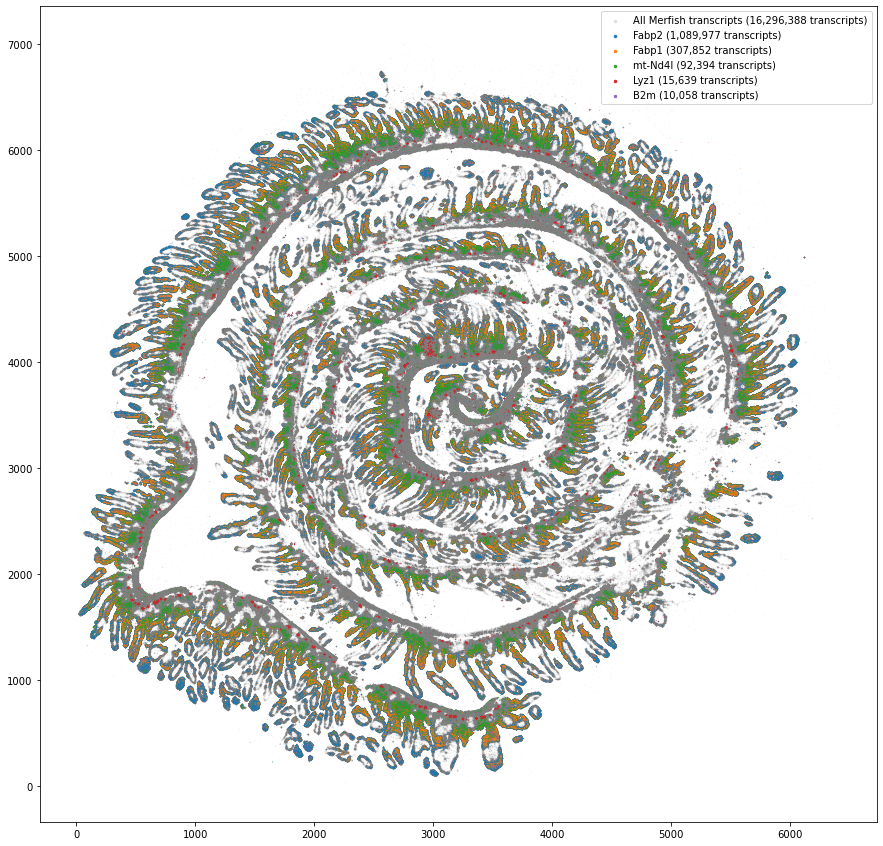
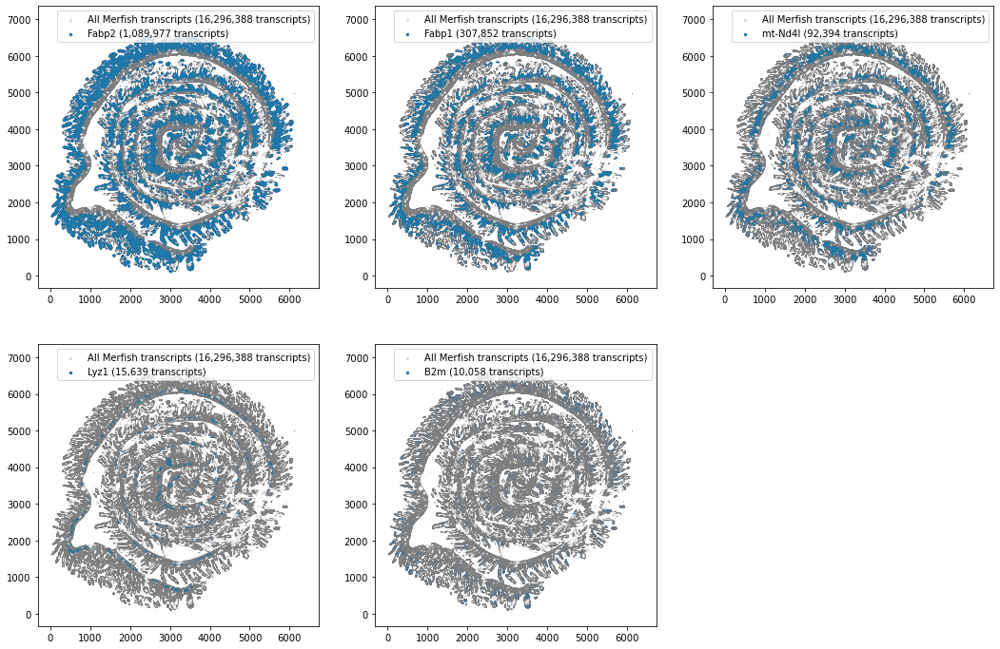

import pandas as pd
import polars as pl
import matplotlib.pyplot as pltValidation
Check that everything worked as expected and that the number of transcripts seems reasonable
Overlay of the MERSFISH Transcripts and the Auxiliary stain transcripts to see, that everything worked as expected…. hopefully
# load Merfish transcripts
# I use ploar because it is a LOT faster
%time merfish = pl.read_csv("../MERLIN_output/detected_transcripts.csv")CPU times: user 11.2 s, sys: 2.37 s, total: 13.5 s
Wall time: 4.34 sstains = ['Fabp2',
'Fabp1',
'mt-Nd4l',
'Lyz1',
'B2m']merfish.shape[0]16296388Make an overlay plot with all stains
fig, ax = plt.subplots(1, 1, figsize=(15, 15))
ax.scatter(merfish['global_x'], merfish['global_y'], s=0.01, c='gray', alpha=.2, label=f"All Merfish transcripts ({merfish.shape[0]:,} transcripts)")
for gene in stains:
auxiliary = pl.read_csv(f"{gene}.csv")
ax.scatter(auxiliary['global_x'], auxiliary['global_y'], s=0.01, label=f"{gene} ({auxiliary.shape[0]:,} transcripts)")
#make points in legend bigger....
lgnd = ax.legend(loc="upper right", scatterpoints=1, fontsize=10)
for handle in lgnd.legendHandles:
handle.set_sizes([6.0])
fig.show()
Make individual plots for each stain
fig=plt.figure(figsize=(18,12))
for (i, gene) in enumerate(stains):
ax = fig.add_subplot(2, 3, i+1)
ax.scatter(merfish['global_x'], merfish['global_y'], s=0.001, c='gray', alpha=.2, label=f"All Merfish transcripts ({merfish.shape[0]:,} transcripts)")
auxiliary = pl.read_csv(f"{gene}.csv")
ax.scatter(auxiliary['global_x'], auxiliary['global_y'], s=0.001, label=f"{gene} ({auxiliary.shape[0]:,} transcripts)")
lgnd = ax.legend(loc="upper right", scatterpoints=1, fontsize=10)
for handle in lgnd.legendHandles:
handle.set_sizes([6.0])
fig.show()